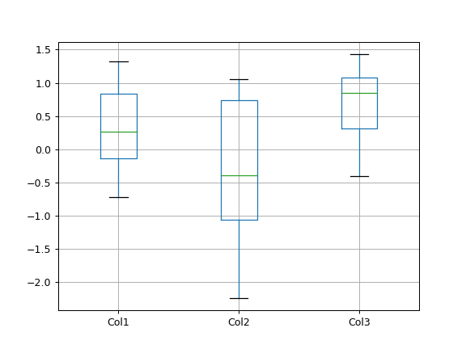
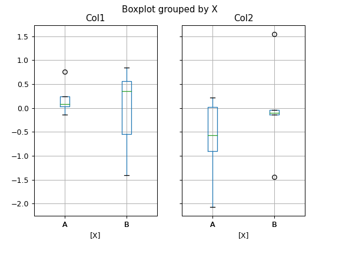
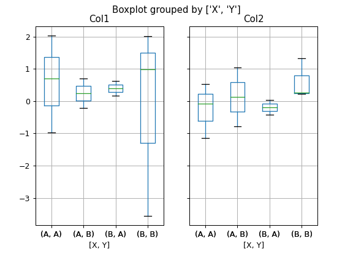
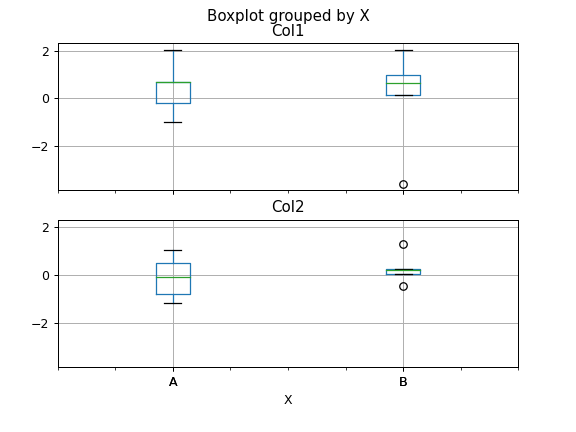
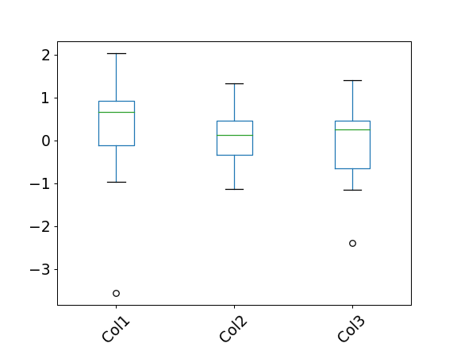

pandas.plotting.boxplot#
- pandas.plotting.boxplot(data, column=None, by=None, ax=None, fontsize=None, rot=0, grid=True, figsize=None, layout=None, return_type=None, **kwargs)[source]#
Make a box plot from DataFrame columns.
Make a box-and-whisker plot from DataFrame columns, optionally grouped by some other columns. A box plot is a method for graphically depicting groups of numerical data through their quartiles. The box extends from the Q1 to Q3 quartile values of the data, with a line at the median (Q2). The whiskers extend from the edges of box to show the range of the data. By default, they extend no more than 1.5 * IQR (IQR = Q3 - Q1) from the edges of the box, ending at the farthest data point within that interval. Outliers are plotted as separate dots.
For further details see Wikipedia’s entry for boxplot.
- Parameters:
- dataDataFrame
The data to visualize.
- columnstr or list of str, optional
Column name or list of names, or vector. Can be any valid input to
pandas.DataFrame.groupby().- bystr or array-like, optional
Column in the DataFrame to
pandas.DataFrame.groupby(). One box-plot will be done per value of columns in by.- axobject of class matplotlib.axes.Axes, optional
The matplotlib axes to be used by boxplot.
- fontsizefloat or str
Tick label font size in points or as a string (e.g., large).
- rotfloat, default 0
The rotation angle of labels (in degrees) with respect to the screen coordinate system.
- gridbool, default True
Setting this to True will show the grid.
- figsizeA tuple (width, height) in inches
The size of the figure to create in matplotlib.
- layouttuple (rows, columns), optional
For example, (3, 5) will display the subplots using 3 rows and 5 columns, starting from the top-left.
- return_type{‘axes’, ‘dict’, ‘both’} or None, default ‘axes’
The kind of object to return. The default is
axes.‘axes’ returns the matplotlib axes the boxplot is drawn on.
‘dict’ returns a dictionary whose values are the matplotlib Lines of the boxplot.
‘both’ returns a namedtuple with the axes and dict.
when grouping with
by, a Series mapping columns toreturn_typeis returned.If
return_typeis None, a NumPy array of axes with the same shape aslayoutis returned.
- **kwargs
All other plotting keyword arguments to be passed to
matplotlib.pyplot.boxplot().
- Returns:
- result
See Notes.
See also
pandas.Series.plot.histMake a histogram.
matplotlib.pyplot.boxplotMatplotlib equivalent plot.
Notes
The return type depends on the return_type parameter:
‘axes’ : object of class matplotlib.axes.Axes
‘dict’ : dict of matplotlib.lines.Line2D objects
‘both’ : a namedtuple with structure (ax, lines)
For data grouped with
by, return a Series of the above or a numpy array:array(forreturn_type = None)
Use
return_type='dict'when you want to tweak the appearance of the lines after plotting. In this case a dict containing the Lines making up the boxes, caps, fliers, medians, and whiskers is returned.Examples
Boxplots can be created for every column in the dataframe by
df.boxplot()or indicating the columns to be used:>>> np.random.seed(1234) >>> df = pd.DataFrame(np.random.randn(10, 4), ... columns=['Col1', 'Col2', 'Col3', 'Col4']) >>> boxplot = df.boxplot(column=['Col1', 'Col2', 'Col3'])

Boxplots of variables distributions grouped by the values of a third variable can be created using the option
by. For instance:>>> df = pd.DataFrame(np.random.randn(10, 2), ... columns=['Col1', 'Col2']) >>> df['X'] = pd.Series(['A', 'A', 'A', 'A', 'A', ... 'B', 'B', 'B', 'B', 'B']) >>> boxplot = df.boxplot(by='X')

A list of strings (i.e.
['X', 'Y']) can be passed to boxplot in order to group the data by combination of the variables in the x-axis:>>> df = pd.DataFrame(np.random.randn(10, 3), ... columns=['Col1', 'Col2', 'Col3']) >>> df['X'] = pd.Series(['A', 'A', 'A', 'A', 'A', ... 'B', 'B', 'B', 'B', 'B']) >>> df['Y'] = pd.Series(['A', 'B', 'A', 'B', 'A', ... 'B', 'A', 'B', 'A', 'B']) >>> boxplot = df.boxplot(column=['Col1', 'Col2'], by=['X', 'Y'])

The layout of boxplot can be adjusted giving a tuple to
layout:>>> boxplot = df.boxplot(column=['Col1', 'Col2'], by='X', ... layout=(2, 1))

Additional formatting can be done to the boxplot, like suppressing the grid (
grid=False), rotating the labels in the x-axis (i.e.rot=45) or changing the fontsize (i.e.fontsize=15):>>> boxplot = df.boxplot(grid=False, rot=45, fontsize=15)

The parameter
return_typecan be used to select the type of element returned by boxplot. Whenreturn_type='axes'is selected, the matplotlib axes on which the boxplot is drawn are returned:>>> boxplot = df.boxplot(column=['Col1', 'Col2'], return_type='axes') >>> type(boxplot) <class 'matplotlib.axes._axes.Axes'>
When grouping with
by, a Series mapping columns toreturn_typeis returned:>>> boxplot = df.boxplot(column=['Col1', 'Col2'], by='X', ... return_type='axes') >>> type(boxplot) <class 'pandas.core.series.Series'>
If
return_typeis None, a NumPy array of axes with the same shape aslayoutis returned:>>> boxplot = df.boxplot(column=['Col1', 'Col2'], by='X', ... return_type=None) >>> type(boxplot) <class 'numpy.ndarray'>